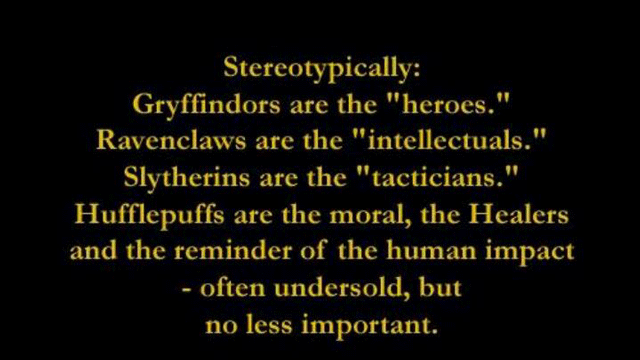

Traits
Hufflepuff has a good amount of traits:
- Dedication / loyalty: Hufflepuffs are loyal to their House and the ones they love, be it family, friends, or their significant other. During the Second Wizarding War theu showed their loyalty to not only Harry, but also to Hogwarts, their teachers, and their classmates.
- Hard work / unafraid of toil: we are not afraid of some work, be it school, a job, or anything else. We always do our best to get the best result.
- Fair play: we like to keep it fair and we are willing to work hard to achieve something in a fair way.
- Tolerance: "I'll teach the lot and treat them just the same." - Helga Hufflepuff. We don’t judge people and we don’t really do stereotyping, which is most likely why Hufflepuff and Slytherin can get along so well; we don’t judge them just because they’re Slytherin. We treat everyone the same.
- Kindness: Hufflepuffs have the least rivalry with the other houses; we like to be friendly towards others.
- Patience: We’re not in a rush and can have a lot of patience when needed.
- Modesty: Hufflepuffs don’t brag about their achievements and that might even be the biggest reason people think of us as the “useless” house; they don’t think we are able to achieve something at all. We do, but we just don’t talk about it that much.
Reputation
 According to Minerva McGonagall, all four of the houses have produced exceptional witches and wizards in their time, but due to Helga Hufflepuff's policy of accepting any student Hufflepuff is often thought to be the house of less talented wizards and witches. However, this is merely a misunderstanding of the Sorting Hat's poem. The Hufflepuff house has produced a great many of successful and influential members of the wizarding world, such as the renowned Magizoologist Newton Scamander. A great number of exceptionally skilled witches and wizards also have their origins on this house, including noted Arithmancer Bridget Wenlock, and former Minister for Magic Artemisia Lufkin. What makes Hufflepuff differ from the other houses is the fact that it doesn't tend to boast about these accomplishments; it is not considered to be part of their nature. Hufflepuff has produced the fewest number of dark wizards than any other house at Hogwarts. Their cheerful and friendly demeanour can probably account for this property of the House. Hufflepuff firmly demonstrated its loyalty during the Battle of Hogwarts in 1998, when they were second only to Harry Potter's own house of Gryffindor in the number of students willing to stay and fight against Voldemort and his forces in the defence of their school.